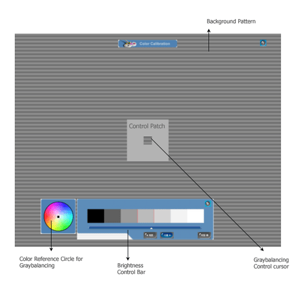

Color Calibration
Color Calibration
MagicTune color calibration makes it possible to achieve sRGB color on your LCD. sRGB color is used to display images from websites as well as specifying a color matching technique to provide monitor and output device color that is consistent. MagicTune color calibration is handled through an interactive series of targets to "dial in" the high, mid, and low tone colors. Once the process is complete, the user will experience accurate color representation of images within Windows and from the web.

|
| NOTE |
Selecting the Factory Default Preset will disable color calibration. To enable color calibration, go to Options>Preferences and select Enable Color Calibration from the preference list. |
|
|
1. Color Calibration

Color Calibrationguides you to get optimal color condition for your monitor.Proceed following 5steps for getting optimal monitor color condition .
- Control "Brightness control bar" for matching the brightness of control patch and the brightness of background pattern
- When you detect specific color tone on "Control patch", move the control cursor
toward to the direction of the color tone referring to "Color reference Circle".
=> Adjustment is finished properly, you won't detect any color tone on Control patch. - When you finish adjustment for step1,Click "Next" button .
- Repeat 1), 2), 3) procedures for remaining step2 ~ step5.
- You can easily view the calibration effect through clicking "Preview " button!
2. Preview
Press "Preview" button on the Color Calibration.
The above picture will be shown.
- Press "View Calibrated" button to see the calibration effect which you adjusted.
- Press "View Uncalibrated" button to see the original image.